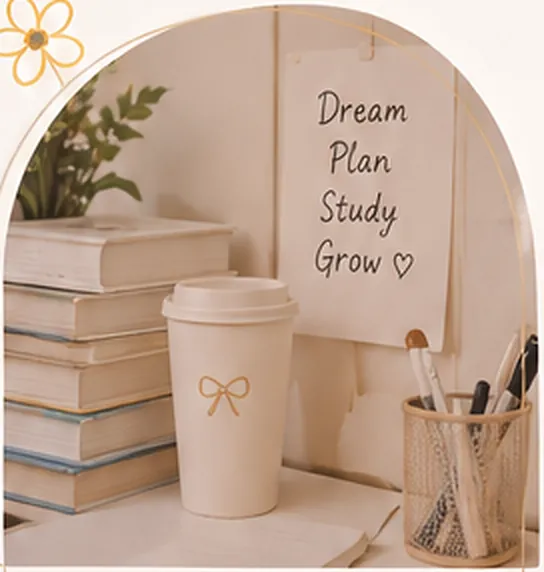

Hello, I’m Isna Ramdaniah
A future educator, lifelong learner,
and a girl who keeps dreaming.

About Me
Aku Isna Ramdaniah, mahasiswa Pendidikan Guru Sekolah Dasar di Universitas Terbuka. Saat ini, aku menempuh semester 5 dengan semangat terus belajar, berkembang, dan memberikan kontribusi positif bagi dunia pendidikan.
Di luar kelas, aku adalah seorang pendamping belajar di RA Anak Kreatif, yang percaya bahwa setiap anak berhak tumbuh dengan cinta, ilmu, dan nilai-nilai mulia.
“Karena pendidikan adalah kunci untuk membuka masa depan yang lebih baik.”
My Journey
Beberapa langkah penting dalam perjalanan kecilku menuju versi terbaik diri.
-
Mahasiswa UT PGSD
Terus belajar dan meraih cita-cita
Semester 5 · Universitas Terbuka. Kuliah sambil mengajar, teori langsung diuji di kelas.
-
Guru Pendamping RA Anak Kreatif
Menemani tumbuh kembang anak
Mendampingi kegiatan harian, literasi awal, dan hafalan surat pendek.
-
Calon Istri & Ibu
Membangun keluarga penuh cinta
Rumah adalah sekolah pertama. Aku ingin menjadi guru terbaik di sana juga.
-
Versi Terbaik Diri
Dengan doa, usaha, dan kesabaran
Pelan-pelan, tapi tidak berhenti.
My Skills
Beberapa keterampilan yang terus aku asah untuk mendukung perjalananku.
- Pendidikan & Pembelajaran (PAUD–SD)
- Manajemen Kelas
- Literasi & Numerasi
- Tahfidz & Keislaman
- Pengembangan Kurikulum
- Menulis & Dokumentasi
- Komunikasi & Kolaborasi
- Adaptasi Teknologi
- Bercerita & Mendongeng
- Media Pembelajaran Kreatif
Learning
Keep Growing